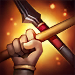
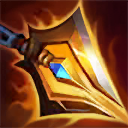
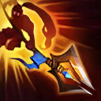

核心裝備
 三相之力
三相之力 巨蛇鋒牙
巨蛇鋒牙 致死宣告
致死宣告 死亡之舞
死亡之舞 守護天使
守護天使
以下為本站 7.2d 校正後的標準配置；實戰仍需依敵方陣容調整。


技能優先：W > E > Q

每第三次普攻造成額外物理傷害並治療自身。清野與長時間戰鬥時持續普攻能維持血量。

強化接下來三次普攻並縮短其他技能冷卻，第三次攻擊會擊飛目標。進場後盡快開始計算三下普攻。
先橫掃長槍，再向前突刺造成傷害與緩速；突刺命中英雄會標記目標，讓一騎當先可以從更遠距離突進。

突進至指定敵人，對周圍造成魔法傷害與緩速，並提高自身攻速。對被二技標記的目標擁有更長施放距離。
對周圍敵人造成依當前生命計算的傷害，擊退挑戰目標以外的敵人，並在短時間內抵擋來自圈外英雄的傷害。
2技突刺命中 → 3技突進 → 普攻 → 1技 → 三次普攻擊飛
先用二技遠距標記，再以加長距離的三技貼近，開一技打出第三下擊飛，是最穩定的 Gank 方式。
3技 → 1技 → 普攻 → 普攻 → 擊飛 → 2技收尾
已經貼近時直接三技減速，利用攻速快速完成一技三下，再以二技追擊或收尾。
2技標記 → 3技 → 4技擊退 → 1技 → 普攻
先確立挑戰目標，再開大把其他敵人推開，創造短暫單挑空間並擋住圈外傷害。
趙信前期單挑與追擊能力很強，清完關鍵營地後可主動爭河蟹或入侵。二技命中能標記遠處目標，再用三技延長距離貼近，進場後靠一技第三下擊飛。
物件團先找可以被二技命中的落單目標，利用三技突進形成多打少。大絕可把其他敵人推開並阻擋圈外傷害，保護自己完成對單一核心的輸出。
後期容易被遠程陣容拉扯，不要正面追著坦克跑。優先從側翼進場，或用大絕切割戰場保護己方主力，再持續普攻縮短技能冷卻。
對局名單是本站依英雄機制與目前配置整理的參考，不等同固定勝率。
打野先維持標準刷野與節奏裝，只有敵方陣容或我方前排需求明顯時才調整。
觸發：敵方前排多，物件團與正面團戰會長時間卡在高生命目標上。
把後期彈性位換成更有效的百分比穿透、削甲或高生命目標傷害。
斷切能直接提高對高生命敵人的普攻傷害。
觸發：敵方能在你進場或搶物件前快速把你秒掉。
魔提斯深淵提供魔防與低血量魔法護盾，比單純增加輸出更能保住進場或持續輸出。
骨甲直接降低同一名敵人接續幾次技能或普攻的傷害。
觸發：進場或搶物件時經常被控制鏈直接中斷節奏。
先購買水銀飾帶取得主動解控，之後再合成水星彎刀；水銀飾帶是合成組件，不是另一件要與水星彎刀互換的成裝。
犧牲部分輸出型傳奇符文，換取韌性與緩速抗性。
觸發：敵方前排、鬥士或吸血核心能在物件團長時間回復。
標準配置已經有重創，維持即可。
觸發：我方陣容沒有可靠第一承傷點，團戰需要有人更早進場吸收注意力。
史特拉克手套用生命與低血量護盾增加第一波承傷，讓你能暫時扛起半前排角色。
提醒：「缺前排」不代表所有打野都要改坦裝；刺客、法師與射手打野硬轉坦通常會失去英雄價值。
7.2a 打野正式版：技能名稱依 Riot Games 台灣《激鬥峽谷》趙信英雄頁校正；出裝、符文、技能順序與對局交叉參考 WildRiftFire 7.2a。Tier 與實戰節奏為本站綜合評級。｜v52：完成打野第一批正式版，完整套用李星固定母版，補齊起手裝、核心三件、五件成裝、技能加點、三組連招、對局與前中後期節奏。
本站於 2026-08-27 依 Patch 7.2d 重新檢查此配置。 Tier、出裝、符文與對局屬於 Wild Rift Guide 的整理與分析，不是 Riot Games 官方推薦；版本改動後會再依官方公告與實戰資料校正。